|
Hornsgatan öster om Torkel Knutssonsgatan, södra sidan
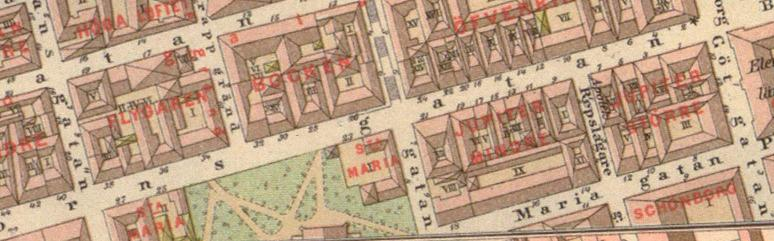 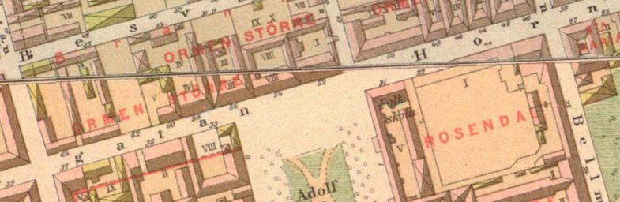
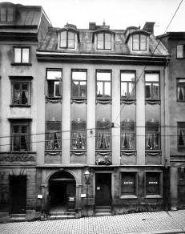
Hornsgatan 5. Apoteket Enhörningen, 1905 | | 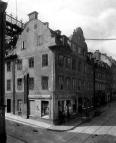
 Hornsgatan 9/Repslagaregatan 2, år 1908. Huset rivet 1910. Hornsgatan 9/Repslagaregatan 2, år 1908. Huset rivet 1910.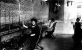
Interiör från telefonstationen på Hornsgatan 9. Bilden tagen tidigast 1900. | | 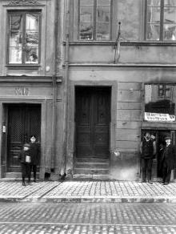
Hornsgatan 15, år 1910. Porthuset rivet 1910. |
|
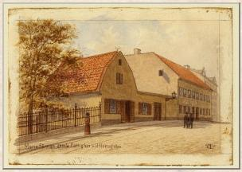
Maria gamla fattighus, Hornsgatan 25-27. Fredrik Isberg, akvarell, 1890-99. | | 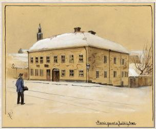
Maria gamla fattighus, Hornsgatan 27, hörnet av Bellmansgatan. Henrik Reutherdahl, akvarell, 1890. | |
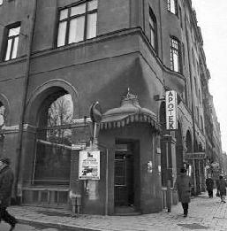
Hornsgatan 29 f d Daurerska huset. Apoteket Enhörningen | |
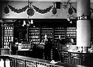
Apoteket Enhörningen, Hornsgatan 29A, f d Daurerska huset. Apoteket Enhörningen låg först på Hornsgatan 5, ännu tidigare på Götgatan och Mariagatan. | |
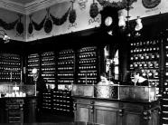
|
Det stora kvarteret mellan Maria kyrka och Adolf Fredriks torg, heter Rosendal större, men någrarosor finns inte längre att se. De, har för länge sedan vissnat och de tunga sekelskifteshus som nubegränsar fyrkanten mot Hornsgatan för knappast tankarna åt så poetiska ting. Men på 1740-talet,då assessorskan Catharina Dauer residerade i en gård i västra delen av kvarteret omgiven av fruktträn och bärbuskar blommade det verkligen i Rosendal större. Och i trädgården fanns ett lusthus,där hennes dotterson, den lille Carl Michael Bellman brukade leka, medan trädgårdsmästare ErikNordström, Ulla Vinblads svärfar, skötte rabatterna. Senare flyttade familjen Bellman tillBjörngårdsbrunnsgatan, numera Bellmansgatan, där en minnestavla på huset nummer 24 markerarvar Söderpojken Carl Michael växte upp. Den Dauerska gården var för övrigt en minnesvärd Södermalmsgård. På 1600-talet ägdes den av denstore husägaren Vilhelm Drakenhjelm, hos vilken mågen Erik Dahlberg en tid bodde. Och efter fruDauer inträdde 1746 Kristoffer Polhem som ägare, han höll dåpå att bygga slussen vid Söderström och ville antagligen vara nära arbetsplatsen. Polhem dog1751 och begrovs i Maria kyrka i närvaro av en mycket känd Söderbo, Emanuel Swedenborg.

Daurerska husetBellman.net Bellmanssällskapet | | 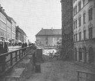
| | 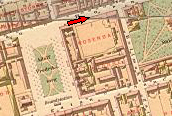
| |
|
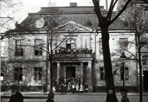
Hornsgatan 31, Adolf Fredriks torg 1. 1900Philipsenska skolinrättningen | | 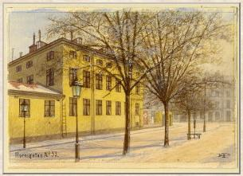
Hornsgatan 33, Adolf Fredriks Torg 2. Akvarell av Fredrik Isberg, 1900. Från sydost, Hornsgatan i bakgrunden. | |
Mariatorget
Ur Stockholmsliv, Staffan Tjerneld, 19501751 - året dog Polhem begrovs fanns inte någon öppen plats väster om Rosendal större, även om det talatsom att här ge Södermalm en monumentalplats. Det var först eldsvådan 1759 somkom planerna att realiseras. Elden började hos en fiskköpare i Besvärsbacken medan ett bakpågick, den spred sig från Timmermansgatan i väster till Stadsgården i öster och brände avomkring trehundra gårdar. Nu blev man rädd för gyttriga och stora kvarter och redan ett parmånader efter branden visades en plan för nyreglering av Mariatrakten upp i rådskammaren. Hornstorget kallades platsen tills namnet 1768 ändrades till Adolf Fredriks torg. Men någonprydnad var den knappast, trots att den då var stadens största. Ännu 1812 konstaterar en dansk påbesök att torget saknade vackra byggnader och i »Gamla Stockholm» får man veta, att det på ensida hade gräs, på en annan sten och en sandöken i mitten. Och att det i tre av hörnen låg brunnarverkade åtminstone inte symmetriskt. En som ömmade för Adolf Fredriks torg och för Söderborna var Gustav III som fann att denöppna platsen var en utmärkt bana för torner- och riddarspel. Han lät bygga stora läktare kringtorget och den 29 maj 1777 drabbade konungen och hans motståndare hertig Karl samman under»all möjlig prakt» och vardera följd av tolv drabanter. Mycket folk hade självfallet infunnit sig ochomfattande arrangemang hade vidtagits; åskådarna delades i fyra grupper med olika biljetter ochvagnarna beordrades stanna i hörnen av torget. Den kungliga logen stod utanför det så kalladeSutherska huset, där nu biografen Rival ligger. Programmet var rikt. De kämpande tävlade med kastspjut, värja och pistol, de spetsadeturkhuvuden och fångade ringar med tornerlansarna. Greve Rålamb segrade och fick motta enguldring ur drottningens hand. Gustav III:s krigslekar blev emellertid allvar vid ryska kriget. Borgerskapet hade täta vapenövningaroch då var torget oftast mötesplatsen. Det var också där som kungen den 30 september 1790 avtackadeborgerskapet som mött upp i stor parad, 1 800 man starkt med två bataljoner infanteri från norr och två från söder. Därtill kom två skvadroner borgerligt rytteri. Hela skådespelet förevigades av konstnären Per Hilleström som länge bodde hos grandseigneuren ochkonstsamlaren Johan Pehr Suther vid Adolf Fredriks torg och alltså denna gång arbetade så att säga påhemmaplan. | 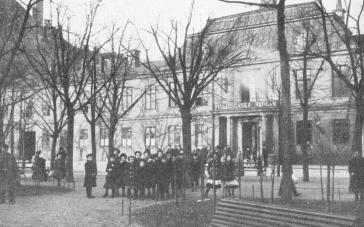
I över hundra år höll den Philipsenska skolan till i det gamla
Sutherska rokokopalatset. | |
Då inte längre torget behövdes för militärt bruk blev det tomt och ödsligt och det var säkertvälkommet, då 1848 ägaren till van der Nootska palatset, ryttmästare Wertmüller, tog initiativ till dealléer som fortfarande kantar torget, även om en hel del av träden måst bytas under de gångna hundraåren. Torget var även salutorg och en dag i veckan fick de bönder som kommit till staden med kreatursälja dem här. 1904 beslöts emellertid att all torghandel skulle bort, Adolf Fredriks torg var dåförvandlat till en park med gruppen Tors fiske i centrum donerad av byggmästare J. P. Holmberg, somsjälv bodde vid torget. Som modell för Tor hade skulptören A. H. Wissler haft - det visste man berätta- den kände kraftkarlen och poliskonstapeln Johannes Lönnqvist i Nikolai. I parken fanns då också PerHasselbergs lilla skulptur Snöklockan som då den på hösten 1900 kom på sin plats väckte indignation ipryda Stockholmskretsar. Det var då väl att den nakna damen stod på en så avlägsen plats i staden,sade man på Östermalm. Som framgår av detta rymmer Adolf Fredriks torgs senare historia inga märkliga moment. I detSutherska rokokopalatset öppnade 1811 grosshandlaren Herman Theodor Philipsen och hans hustruCharlotta, född Moll, den Philipsenska skolan, som var pionjär för folkskoleundervisningen och somlämnade utbildning åt fattiga barn i Maria. Det gamla Sutherska huset revs 1910. Vid torget låg ävenSödermalms högre läroanstalt för flickor under ett femtiotal år. | 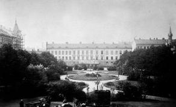 | | 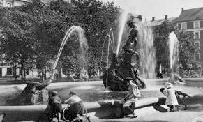 | |
| 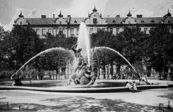 Mariatorget har under årens lopp haft många olika namn. Ursprungligen kallades platsen Hornstorget eller Nya torget. Från 1768-1958 var namnet Adolf Fredriks torg. Torget anlades som rännarbana och exersisplats och har under lång tid varit salutorg för lantmannaprodukter. På 1870-talet bestod torget av en stor öppen grusplan med lindalléer efter långsidorna. I slutet av 1800-talet gjordes torget om till en lummig stadspark med grusgångar och blomsterplanteringar. En bronsfontän "Tors fiske" av Anders Wissler tillkom i början av 1900-talet och flera konstverk av Per Hasselberg som "Snöklockan"1900 och "Tjusningen" förhöjde parkens status. I slutet på 1950-talet omdanades parken med en bred mittgång och raka sidoordnade gräsytor med blomsterrabatter. Platsen mot Hornsgatan fick ny utformning. 1973 uppsattes ett minnesmärke över Emanuel Swedenborg, som varit bosatt i trakten. En mindre ombyggnad av parken genomfördes 1996. | | 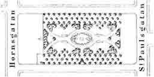 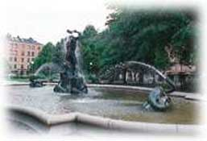 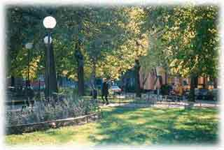 Gräsytorna utökades, nya träd och blommor planterades. I parken finns bl a en stor prydnadsapel, en stor ask Fraxinus exelsior och två paraplyalmar Ulmus glabra 'Horizontalis'. |
| 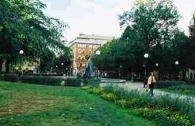 | | 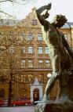 | | 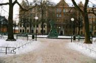 |
| 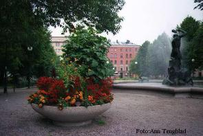 | | 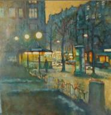 | |
Swedenborgs lusthus
Hornsgatan 43
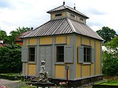 | | Swedenborgs lusthus, Längst upp på Hornsgatan i Stockholm bodde filosofen och naturforskaren Emanuel Swedenborg (1688- 1772) och omkring 1750 han lät bygga en malmgård. Ett lusthus i hans trädgård flyttades till Skansen 1986. Det är bara mittpartiet av lusthuset som blivit bevarat. På vänstra sidan låg förr en biblioteksflygel, vars mörka förrum finns kvar i den bevarade byggnaden. Huset från 1767 har med sitt | | 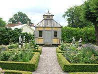 |
I Hjalmar Gullbergs lyriska svit Röster från Skansen som tillkom i anledning av Skansens 50-årsjubileum 1941, ingår en dikt om Swedenborgs lusthus: Jag är ett lusthus som man går förbi.
Jag stod på Söder i min herres gård.
Hans änglar fyllde mig med harmoni,
och andevärlden trivdes i min värld. En mäktig forskare, en stor profet
har haft min enkla hydda till sitt hem.
Härinne såg han himlars härlighet,
här skapades ett nytt Jerusalem. Kring anden som har flytt, var jag ett skal.
Nu står jag övergiven med min sorg.
Men jag var fylld av harpa och cymbal,
när Gud kom på besök hos Swedenborg.
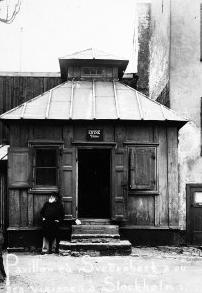 | | 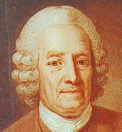
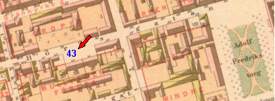 Frans G. Lindh skrev 1921 om Swedenborg somsöderbo och HenrikAlm 1938 om Swedenborgs hus och trädgård. Ur Sjutton Skansenhus berättar, Biörnstad, 1998 |
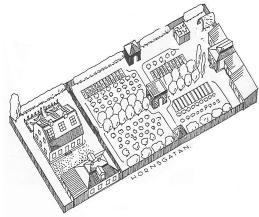
Rekonstruktion av Swedenborgs Malmgård. I det inre huset till vänster bodde Swedenborg, medan huset närmast gatan användes av tjänstefolket. Lusthuset ligger längst till höger mellan det lilla biblioteket och redskapshuset. (Efter Henrik Alm i S:t Eriks årsbok 1938.) | | Alm lät göra en rekonstruktionsskiss av hur fastigheten kan ha tett sig påSwedenborgs tid. Tomten var ca 2 100 kvadratmeter stor och ingärdad av hus och plank.Mangården i öster tog ungefär en tredjedel av utrymmet. Utmed gatan låg en sätesbyggning »ickeså länge sedan byggd av timmer och med tegeltak«. Den hade tre rum i nedre och ett i den övrevåningen. Intill följde ett hus för hästar och kor med nödiga foderrum »jemte andrabekvämligheter«. Bådahusen var rödfärgade. Utmed östra tomtgränsen var en smal remsa avdelad som gödselstad ochtroligen som väg ut på gatan för djuren. Åt söder låg en öppen gård och på dess motsatta sida enkorsvirkesbyggnad, som i nedervåningen hade två större och ett mindre rum, alla med tapeter och iövre våningen ett stort rum, inrett som orangeri, allt uppvärmt med kakelugnar. Detta hus var panelatut- och invändigt, gulmålat och försett med tegeltak. |
Mellan det huset och granngården var en liten Lust-Trägård ordnad med blomster och ritningar avbuxbom. Den ansenliga trädgården i väster var skild från mangården av ett plank med portar och delad i fyrajämnstora kvarter av en mittgång och en tvärgång. Utmed mittgången stod flera stora och prydligalindar och kvarteren fanns »utvalde nya Frukt-Trän, Blomster och Grönsaker«. I gångarnasskärningspunkt låg ett kvadratiskt hus med öppningar åt alla fyra hållen, väggar av gallerverk ochbänkar i hörnen. I norra änden av tvärgången »et Hus med tre sidor och tredubbla Portar åt Trägården,spetsigt Tak med tre stora trekantiga Fönster på det samma.« Om man öppnade alla portarna och hängde en spegel på den fjärdeväggen mot planket, såg man i spegeln tre trädgårdar. | Vid tvärgångens andra ände stod en fyrkantig voljär med nät av grov mässingstråd, i vilkenSwedenborg hade flera sorters större och mindre fåglar. I bortersta änden på mittgången, slutligen,låg det lusthus som intresserar oss mest, »bestående af en Sal och inom den samma et litet Rum,utur hwilket man kommer in i Bibliothequet, som är et lägre men hyggeligit Rum på Södra sidan intil nämnde Lusthus. Desse sistnämnde Husen äro med gul Brädes panelning utan til wäl försedde,samt innan til med wackra Tapeter.« På andra sidan biblioteket var en välvd stenkällare byggd med torvtäckning och framför den enliten labyrint av bräder, »hwilken är så beskaffad at om en obekant går något in uti honom, kan hansedan utan hjelp, icke träffa igen utgången«. På norrsidan hade lusthuset ännu en flygel avsedd förträdgårdsredskap och hörnet mot Hornsgatan fylldes av ett vagnhus. | | 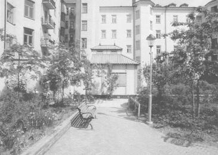
1989 byggde Föreningen Swedenborgs Minne en kopia av lusthuset på den stora gården inne i kavrteret Mullvaden första. Det används både av Swedenborgsorganisationerna och hyresgästerna för möten och samvaro. |
Trädgårdenmed alla sina små hus är säkert helt och hållet Swedenborgs eget verk, sånär som på lindarna, sommåste ha vuxit upp innan han kom till gården. Dem fick han ta hänsyn till i sin planering.Hur mycket han byggde om eller byggde nytt i mangården är svårt att bedöma, menslutresultatet tycks ha varit helt anpassat till hans egna behov. I boningshuset närmast gatan boddehans tjänstefolk och i korsvirkeshuset innanför bodde han själv. Henrik Alm har i sin rekonstruktionsritning försett korsvirkeshuset med tre stora fönster i varttakfall. Den detaljen är tveksam. Orangerier brukade under 1700-talet byggas med storafönster i en södervägg och med isolerade tak, så som vid Tottieska malmgården. Fönster i takmåste skapa stora problem att hålla värmen på vintern. Om det ändå lyckades var risken stor attsmält snö trängde ner i huset. Frågan är om inte huset fått en ganska normal övervåning och ett tegeltäckt brädtak, menkanske större fönster mot söder än vanliga bostadshus. Då skulle det fungera ungefär som dengamla biljardsalen en trappa upp i det lilla stenhuset på Tottieska malmgården, som på AndersTotties tid användes som drivhus. 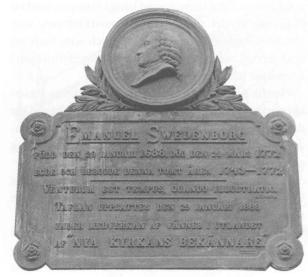
| | Drivhus kanske också vore en mer adekvat beteckning för vad Swedenborg använde sin övervåningtill. Anteckningarna i almanackan 1752 är gjorda vid månaderna januari, februari och mars. Deberättar om citroner och cypresser, vilka säkert övervintrade i huset, men framför allt om en radmindre växter från sängarna i trädgården. Under 1870-talets svåra bostadsbrist hyrdes lusthuset ut till folk som inte hittade någon annanstansatt bo. Senare begagnades det som en upplagsplats för bland annat fotogenfat. Under dess sista tid påsin gamla plats hade ägarna klätt hela huset invändigt med svart sammet och placerat en katafalk meden kista på mitt irummet. Där låg en docka föreställande Swedenborg på lit de parade och förevisades mot enentré av 25 öre. |
| Artur Hazelius hade tidigt sina ögon riktade på lusthuset. De 1896 inledda förhandlingarna om priset blev besvärliga, men fördes till ett lyckligtslut sedan Hazelius fått stöd från två medlemmar av Nya Kyrkan och lusthuset kunde bege sig påresa till Djurgården.Då hade den ursprungliga fastigheten på Söder minskats genom breddning av Hornsgatan och styckatsi tre tomter. 1879 bebyggdes Hornsgatan N:r 43,1881 N:r 41 och 1905 tomten N:r 45 där lusthusetursprungligen stod. | | 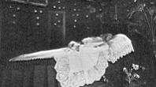
|
| |